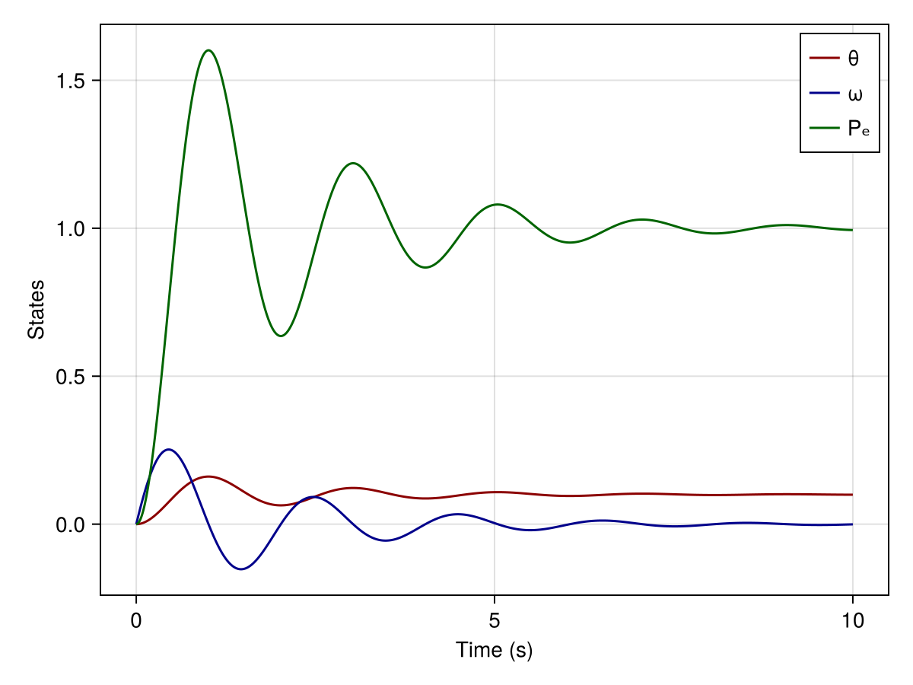
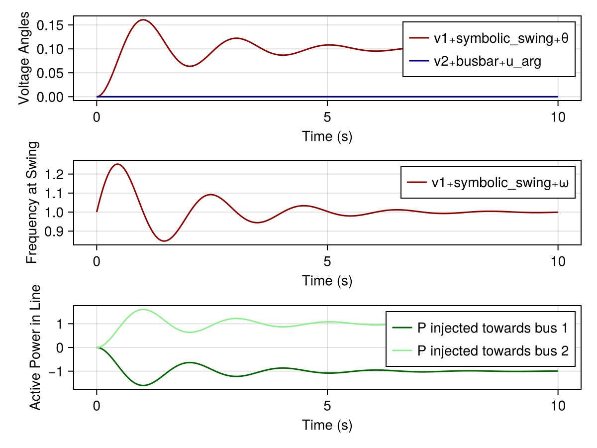

Getting Started with PowerDynamics.jl
This tutorial introduces the core ideas behind PowerDynamics.jl and its relationship to the SciML ecosystem.
This tutorial can be downloaded as a normal Julia script here.
PowerDynamics.jl is a tool for modeling and simulating dynamic powergrid models. Its main idea is to build equation-based, symbolic models for various dynamic components. Different components, such as shunts, generators or controllers are then connected to form dynamic models representing entire Buses or Lines. The dynamic Bus and Line models are then interconnected to form powergrids.
The most important distinction in contrast to other tools is that PowerDynamics.jl is a modeling framework rather than a simulation tool. At its core, a dynamic powergrid model is just a set of differential-algebraic equations (DAEs) that describe the evolution of the system over time. PowerDynamics.jl helps you to build these DAE models in a modular way, and then simulate them using the powerful solvers from the SciML ecosystem.
PowerDynamics.jl gives you direct access to the underlying DAE structure and purposely exposes you to the "raw" commands from the SciML Ecosystem, most importantly DifferentialEquations.jl. While this can be a bit overwhelming at first, it really pays off to learn the API of the underlying packages directly rather than wrapping them all up in a PowerDynamics-specific API.
This tight integration means, that it is much easier to transfer advanced SciML methods and concepts to systems defined with PowerDynamics.jl.
In this tutorial, we will model the same physical system, a Single-Machine-Infinite-Bus (SMIB), in two different ways. First, we'll build it as a "plain" ModelingToolkit model using pure SciML packages. Then, we'll model the same system using PowerDynamics' component-based approach. This side-by-side comparison highlights the parallels in nomenclature and workflow between the two approaches.
The workflow for both approaches looks like this:
╭────────────────────────╮ ╭────────────────────────────╮
│ Pure MTK Model │ │ PowerDynamics.jl Model │
╞════════════════════════╡ ╞════════════════════════════╡
│ Equation-based model │ │ Composite Model consisting │
│ of the entire system. │ │ of equation-based MTK │
╰─────────────────────┬──╯ │ models for Buses and Lines │
│ │ ╭───────╮ │
│ │ 2 ┯━┿ ┿━┯ 3 │
│ │ ↓ │ ╭───╯ ↓ │
│ │ ┷━┯━┷ 1 │
│ │ (~) │
│ ╰──────┬─────────────────────╯
ModelingToolkit.jl │ │ PowerDynamics.jl
generates ▾ ▾ generates
╭───┴───────────┴───╮
│ DAE System │
│ M ̇x = f(x, p, t) │
╰─────────┬─────────╯
RHS function + Mass Matrix ▾
╭─────────────────────┴─────────────────────╮
│ SciML-ODEProblem │
│ Data structure for time-domain simulation │
╰─────────────────────┬─────────────────────╯
OrdinaryDiffEq.jl solver ▾
╭──────────────────────┴──────────────────────╮
│ SciML-ODESolution │
│ Solution object containing the time series │
│ for all components │
╰──────────────────────┬──────────────────────╯
Symbolic Indexing ▾
╭──────────────────────────┴──────────────────────────╮
│ Time-series Inspection │
│ Symbolic indexing allows for easy access to all │
│ states of all subcomponents for detailed analysis. │
╰─────────────────────────────────────────────────────╯Top-level Packages:
- PowerDynamics.jl: The main package for building powergrid models. It provides a library and modeling tools specific to power systems, such as powerflow models and component libraries.
- NetworkDynamics.jl: Our backend package that provides most of the core functionality. It is general-purpose and can model any kind of networked dynamical system.
SciML Packages:
- ModelingToolkit.jl (MTK): A symbolic modeling framework for defining and manipulating differential equations. The key word here is symbolically – you write equations, not numerical code. MTK automatically performs simplifications and generates efficient numerical code for simulation.
- DifferentialEquations.jl: Umbrella package for everything related to differential equations, including stochastic and delay differential equations. Since it's large, we typically import specific subpackages, i.e.:
- OrdinaryDiffEq.jl: Solvers for ordinary differential equations (ODEs and DAEs). You can reduce load time even further by only importing specific solver packages like OrdinaryDiffEqRosenbrock.jl or OrdinaryDiffEqTsit5.jl.
- NonlinearSolve.jl: Solvers for nonlinear systems of equations, used for powerflow calculations and DAE initialization.
Other Packages:
- Makie.jl: A powerful plotting package for visualizing results with its backends CairoMakie.jl for vector graphic output and GLMakie.jl/WGLMakie.jl for interactive visualizations.
Simple ModelingToolkit System
In this section we'll model the simplest Single-Machine-Infinite-Bus System (SMIB): a Swing equation connected to a slack bus.
ω,θ
⤺
Turbine Power Pₘ 🭃▄▄▄🭎 Pₑ Electrical Power
─→ 🭔▀▀▀🭟 ─→
H
The equations of the rotor connected to the infinite bus can be written as:
\[\begin{aligned} \dot{\theta} &= \omega\\ M\,\dot{\omega} &= P_\mathrm{m} - P_\mathrm{e} - D\,\omega&&\text{Swing Equation with}\\ P_\mathrm{e} &= \frac{1}{X}\sin{\theta}&&\text{connection to infinite bus with}\ δ=0 \end{aligned}\]
where $M$ is the inertia, $\omega_s$ is the synchronous speed, $P_m$ is the mechanical power input, and $P_e$ is the electrical power output. The state is described by the rotor angle $\theta$ and the angular velocity $\omega$ (deviation from synchronous speed). The ideal rotor is connected to a slack bus via a lossless transmission line with reactance $X$.
To simulate this system, we first need to import some packages...
using ModelingToolkit
using ModelingToolkit: t_nounits as t, D_nounits as Dt
using OrdinaryDiffEqRosenbrock
using CairoMakieMTK: Model Definition & Simulation
Julia allows you to use unicode characters in variable names. In most Julia development environments you can insert them with LaTeX-like syntax: \alpha<TAB> ⇒ α, \_e<TAB> ⇒ ₑ and \_+ ⇒ ₊. Especially ₊ is important as it is used as a separator in MTK.
After importing the packages, we can define the symbolic system using the @mtkmodel macro:
@mtkmodel SwingInfiniteBus begin
@parameters begin
M = 1 # machine inertia
D = 1 # machine damping
Pₘ = 1 # mechanical power
X = 0.1 # reactance of powerline
end
@variables begin
θ(t) # rotor angle
ω(t) # angular velocity (rel to sync. speed)
Pₑ(t) # electrical power (connection to IB)
end
@equations begin
Pₑ ~ 1/X * sin(θ)
Dt(θ) ~ ω
M * Dt(ω) ~ Pₘ - Pₑ - D*ω
end
endThe definition of the system is quite straightforward. Note how we defined 3 states, including one for the electrical power $P_\mathrm{e}$. We can instantiate the system by calling its constructor SwingInfiniteBus():
@named symbolic_system = SwingInfiniteBus()
full_equations(symbolic_system) # show all equations\[ \begin{align} \mathtt{P_e}\left( t \right) &= \frac{\sin\left( \theta\left( t \right) \right)}{X} \\ \frac{\mathrm{d} \theta\left( t \right)}{\mathrm{d}t} &= \omega\left( t \right) \\ M \frac{\mathrm{d} \omega\left( t \right)}{\mathrm{d}t} &= \mathtt{P_m} - \mathtt{P_e}\left( t \right) - D \omega\left( t \right) \end{align} \]
In order to simulate the system, we need to call mtkcompile, which will essentially perform a symbolic simplification of the system:
compiled_system = mtkcompile(symbolic_system)
full_equations(compiled_system) # show all equations\[ \begin{align} \frac{\mathrm{d} \omega\left( t \right)}{\mathrm{d}t} &= \frac{ - \mathtt{P_m} + \frac{\sin\left( \theta\left( t \right) \right)}{X} + D \omega\left( t \right)}{ - M} \\ \frac{\mathrm{d} \theta\left( t \right)}{\mathrm{d}t} &= \omega\left( t \right) \end{align} \]
You can see that the "compiled" system only consists of two states, $\theta$ and $\omega$. This is because $P_\mathrm{e}$ is not really a state of the system, but rather an intermediate variable, so it was thrown out. While trivial in this case, this is the symbolic simplification at work.
To simulate the system, we need to define initial conditions for the states $\theta$ and $\omega$. Also, we need to define a time span for the simulation.
u0 = [
compiled_system.θ => 0.0,
compiled_system.ω => 0.0,
]
tspan = (0.0, 10.0)Combining the compiled system, initial conditions, and time span, we can define a so-called ODEProblem.
prob = ODEProblem(compiled_system, u0, tspan)ODEProblem with uType Vector{Float64} and tType Float64. In-place: true
Initialization status: FULLY_DETERMINED
Non-trivial mass matrix: false
timespan: (0.0, 10.0)
u0: 2-element Vector{Float64}:
0.0
0.0The ODEProblem contains all the information needed to simulate the system. We can simulate the system using any of the solvers from OrdinaryDiffEq.jl. In this case, we decided to use the Rodas5P solver from OrdinaryDiffEqRosenbrock.jl.
sol = solve(prob, Rodas5P())MTK: Solution Handling
The solution object we get contains all the time series in the system. For low-level access, we can look at
sol.t36-element Vector{Float64}:
0.0
9.999999999999999e-5
0.002529079308741065
0.026283887657780104
0.07800679198556525
0.15297191362332474
0.2521820918931089
0.380047071395815
0.5382945762155958
0.7303714016809488
⋮
7.008471727284863
7.366477939697484
7.790061586291453
8.142149071616375
8.511603235144044
8.960467274909947
9.265325854311882
9.631585902349284
10.0to get an array of all the points in time the solver stepped to. While
sol.u36-element Vector{Vector{Float64}}:
[0.0, 0.0]
[9.999499850007931e-5, 4.999833295834928e-9]
[0.002525856955210339, 3.195409648779433e-6]
[0.025911614368522105, 0.0003422180807034918]
[0.07428318833687908, 0.00295001029040083]
[0.13638061456871176, 0.010912682968544448]
[0.2000364519419042, 0.027791680565435784]
[0.2455533843675794, 0.05673665925391976]
[0.2433334872603554, 0.0962395614783413]
[0.16914223541262874, 0.13686966194691014]
⋮
[0.0015801863458427324, 0.10306249939905185]
[-0.006551598035338805, 0.1019629526524765]
[-0.004990552535182733, 0.099106595605891]
[0.0012152232054117437, 0.09843877060496765]
[0.004455862311246596, 0.0996668008322669]
[0.0013082708002801742, 0.10116134984819877]
[-0.0017094652258947607, 0.10106888747697117]
[-0.0025653510226956895, 0.10017454284820705]
[-0.0005815994542036382, 0.09954611845912506]gives the full state of the system for each of the time points.
However, this is far from all we can do with the solution object! First off, since we use dense output by default, we can interpolate the solution at any point in time:
sol(2.5) # interpolate at t=2.5s (better than linear interpolation)2-element Vector{Float64}:
0.09158515955100492
0.09362431888535706The output, however, is still not very user friendly, since we only get a vector of values. This is where symbolic indexing comes to our help! Using the syntax
sol(1.0, idxs=compiled_system.θ) # get θ at t=1.0s0.1607912898986255we can extract a specific state at a specific time point. This syntax has lots of variants; for example, we can efficiently interpolate multiple states at multiple time points:
sol([0.0, 1.0], idxs=[compiled_system.θ, compiled_system.ω]) # get θ and ω at t=0.0s and t=1.0st: 2-element Vector{Float64}:
0.0
1.0
u: 2-element Vector{Vector{Float64}}:
[0.0, 0.0]
[0.1607912898986255, 0.005099089535244249]Since ModelingToolkit keeps track of all of its simplifications, we can also extract so-called "observed" states, i.e., states that were part of the original symbolic system but got eliminated during compilation. For this example, we can get the electrical power $P_\mathrm{e}$ at any time point even though it is not part of the solution itself:
sol(0.5, idxs=compiled_system.Pₑ) # get Pe at t=0.5s0.866835628390135Finally, we can use the same symbolic indexing syntax in plotting commands. The example below uses Makie.jl; however, the commands are very similar in Plots.jl.
let
fig = Figure()
ax = Axis(fig[1,1], xlabel="Time (s)", ylabel="States")
lines!(sol, idxs=compiled_system.θ, color=:darkred)
lines!(sol, idxs=compiled_system.ω, color=:darkblue)
lines!(sol, idxs=compiled_system.Pₑ, color=:darkgreen)
axislegend(ax; position=:rt)
fig
end
Simple PowerDynamics System
Now, we're going to model the same physical system but this time using the component based approach of PowerDynamics.jl
This means, we'll define two buses with a pi-line (zero shunts) connecting them.
bus 1 bus 2
╻ ╻
(═)╶────╂──────────────╂───╴(~)
swing-eqs ╹ pi-line ╹ slack/infinite busFirst, we need to load the PowerDynamics.jl package:
using PowerDynamics
using PowerDynamics: LibraryWe start by loading a Swing model generator from the library.
@named symbolic_swing = Library.Swing(V=1)
full_equations(symbolic_swing) # show all equations\[ \begin{align} \frac{\mathrm{d} \theta\left( t \right)}{\mathrm{d}t} &= \omega\left( t \right) - \mathtt{\omega\_ref} \\ M \frac{\mathrm{d} \omega\left( t \right)}{\mathrm{d}t} &= \mathtt{Pm} - \mathtt{Pel}\left( t \right) - D \left( \omega\left( t \right) - \mathtt{\omega\_ref} \right) \\ \mathtt{Pel}\left( t \right) &= \mathtt{terminal.i\_r}\left( t \right) \mathtt{terminal.u\_r}\left( t \right) + \mathtt{terminal.i\_i}\left( t \right) \mathtt{terminal.u\_i}\left( t \right) \\ \mathtt{terminal.u\_r}\left( t \right) &= V \cos\left( \theta\left( t \right) \right) \\ \mathtt{terminal.u\_i}\left( t \right) &= V \sin\left( \theta\left( t \right) \right) \end{align} \]
The equations represent a classic swing equation with no voltage dynamics. We passed the keyword argument V=1 to set the voltage magnitude to 1 p.u. So far, this is a "pure" MTK model, similar to the symbolic_system from above. The equations are structurally identical to the ones we defined manually above only differing in some conventions.
We can then compile the model to get rid of intermediate variables and make it ready for simulation. We do so by calling compile_bus. The additional call to MTKBus can be ignored for now and is explained in further tutorials and the Modeling Concepts docs. Additionally, we give the bus model an index using the vidx keyword (short for vertex index).
bus1 = compile_bus(MTKBus(symbolic_swing); vidx=1, name=:swing)VertexModel :swing NoFeedForward() @ Vertex 1
├─ 2 inputs: [busbar₊i_r, busbar₊i_i]
├─ 2 states: [symbolic_swing₊ω≈0, symbolic_swing₊θ≈0]
├─ 2 outputs: [busbar₊u_r=1, busbar₊u_i=0]
└─ 5 params: [symbolic_swing₊ω_ref=1, symbolic_swing₊Pm≈1, symbolic_swing₊M=0.005, symbolic_swing₊D=0.0001, symbolic_swing₊V=1]This object is a so-called VertexModel. VertexModels (and EdgeModels) are the building blocks of systems in PowerDynamics.jl and NetworkDynamics.jl. From the printout you can already see that it has different variables/parameters with some default values and so on.
For the second bus, we use a slack bus (also called infinite bus), which maintains constant voltage magnitude and angle:
@named symbolic_slack = Library.VδConstraint(; V=1, δ=0)
bus2 = compile_bus(MTKBus(symbolic_slack); vidx=2, name=:slack)VertexModel :slack NoFeedForward() @ Vertex 2
├─ 2 inputs: [busbar₊i_r, busbar₊i_i]
├─ 0 states: []
├─ 2 outputs: [busbar₊u_r=1, busbar₊u_i=0]
└─ 2 params: [symbolic_slack₊V=1, symbolic_slack₊δ=0]The VδConstraint enforces $V=1$ p.u. and $\delta=0$ at all times, which is the mathematical definition of a slack/infinite bus.
And a powerline connecting the two:
@named symbolic_piline = Library.PiLine()
line = compile_line(MTKLine(symbolic_piline); src=1, dst=2)EdgeModel :line PureFeedForward() @ Edge 1=>2
├─ 2/2 inputs: src=[src₊u_r, src₊u_i] dst=[dst₊u_r, dst₊u_i]
├─ 0 states: []
├─ 2/2 outputs: src=[src₊i_r, src₊i_i] dst=[dst₊i_r, dst₊i_i]
└─ 9 params: [symbolic_piline₊R=0, symbolic_piline₊X=0.1, symbolic_piline₊G_src=0, symbolic_piline₊B_src=0, symbolic_piline₊G_dst=0, symbolic_piline₊B_dst=0, symbolic_piline₊r_src=1, symbolic_piline₊r_dst=1, symbolic_piline₊active=1]The powerline got the src and dst keywords. This means our line is defined from bus 1 to bus 2.
Having defined all the components, we can now connect them to a network model.
nw = Network([bus1, bus2], line)Network with 2 states and 16 parameters
├─ 2 vertices (2 unique types)
└─ 1 edges (1 unique type)
Edge-Aggregation using SequentialAggregator(+)The nw object is somewhat similar to the compiled_system from above: it is a fully defined DAE system (ODE system in this case) that can be simulated. Similar to the compiled_system, it not only contains the right-hand-side function but also contains information necessary for symbolic indexing, i.e., which component has which states/parameters under which names and so on.
PD: Symbolic Indexing
In contrast to the MTK example above, our symbolic indices are "hierarchical", i.e., we have to specify the component first and then the state/parameter name.
VIndex objects are used to reference states/parameters of vertex-entities (buses, shunts, generators, loads, etc.),
VIndex( 1, :symbolic_swing₊ω)
VIndex(:swing, :symbolic_swing₊θ)
╶─┬──╴ ╶───────┬───────╴
╵ │
Index/name of vertex │
╵
Name of parameter/statewhile EIndex objects are used to reference states/parameters of edge-entities (lines, transformers, etc.),
EIndex( 1, :src₊P )
EIndex( :edge, :src₊Q )
EIndex( 1 => 2, :src₊Q )
EIndex(:swing => :slack, :symbolic_piline₊R)
╶──────┬───────╴ ╶───────┬────────╴
╵ │
Index/name or src-dst pair │
╵
Name of parameter/statePD: Manual Definition of Initial Conditions
For large systems with possibly thousands of states and parameters, finding a suitable initial state is a hard problem which is covered in depth in later tutorials.
For now, our system is quite simple and we can find a suitable initial state by hand. We can create a "default" state by calling NWState on the network object:
s0 = NWState(nw)NWState{Vector{Float64}} of Network (2 vertices, 1 edges)
├─ VIndex(1, :symbolic_swing₊ω) => NaN
└─ VIndex(1, :symbolic_swing₊θ) => NaN
p = NWParameter([1.0, NaN, 0.005, 0.0001, 1.0, 1.0, 0.0, 0.0, 0.1, 0.0, 0.0, 0.0, 0.0, 1.0, 1.0, 1.0])
t = nothingThis creates a state and parameter object, which is prefilled with all of the default values stored in the Network. The undefined states/parameters are set to NaN.
!!! note Automatic State Reduction In the printout of s0 you see only two "real" states: $\omega$ and $\theta$ of the swing equation, everything else was simplified away, just like in the MTK example above.
Using the symbolic indexing syntax described above, we can now set the initial conditions for all states and parameters that are not already defined.
Similar to the example above, we start at 0 angle and a frequency of 1 p.u. (in contrast to the MTK example above, the swing model from the library is defined in terms of PU frequency not frequency deviation):
s0[VIndex(1, :symbolic_swing₊θ)] = 0.0
s0[VIndex(:swing, :symbolic_swing₊ω)] = 1 # alternatively, reference vertex by unique nameInstead of using the symbolic indices explicitly, NWState supports a more user-friendly syntax for accessing states. We set the mechanical power input, the inertia, and the damping of the machine at bus 1:
s0.v[1][:symbolic_swing₊Pm] = 1
s0.v[1][:symbolic_swing₊M] = 1
s0.v[:swing][:symbolic_swing₊D] = 1It is important to understand that at its core, NWState objects are just "wrappers" around flat arrays. Similar to the pure-MTK example above, where our state vector u was just a vector of 2 plain values, the NWState object contains a flat vector of all states and a flat vector of all parameters. The flat vectors can be accessed using the uflat and pflat functions:
uflat(s0)2-element Vector{Float64}:
1.0
0.0pflat(s0)16-element Vector{Float64}:
1.0
1.0
1.0
1.0
1.0
1.0
0.0
0.0
0.1
0.0
0.0
0.0
0.0
1.0
1.0
1.0By wrapping those flat vectors in a NWState object we make them "human readable" by providing symbolic indexing.
There are lots of things you can do with NWState objects. For example, once again it is possible to inspect "observed" states—states which are not actually part of the state vector but rather intermediate variables. For example, we can inspect the active power at both src and destination end.
s0.e[1=>2]([:src₊P, :dst₊P])FilteringProxy for NWState()
Component filter: EIndex(1 => 2)
State filter: [:src₊P, :dst₊P]
Types: states ✓ parameters ✓ inputs ✓ outputs ✓ observables ✓
Matching Indices:
╭ EIndex(1, :src₊P) 0 :line
╰ EIndex(1, :dst₊P) 0 Unsurprisingly, since we start at an angle of 0 with both slack and swing, there is no active power flow.
PD: Simulation of the System
Similar to before, we take our model and use it to define an ODEProblem. We can then solve it using the Rodas5P solver again.
The only notable difference here is, that we need to pass both flat vectors: states and parameters.
prob = ODEProblem(nw, s0, (0.0, 10.0))
sol = solve(prob, Rodas5P())PD: Solution Handling
The solution handling is analogous to the pure-MTK example above.
sol(1.0, idxs=VIndex(1, :symbolic_swing₊θ)) # get θ of bus 1 at t=1.0s0.16079122457153677For generating lists of symbolic indices at once, NetworkDynamics.jl provides the auxiliary functions vidxs and eidxs:
vidxs(nw, :, :busbar₊u_arg) # create lists of VIndex objects2-element Vector{NetworkDynamics.SymbolicIndex}:
VIndex(1, :busbar₊u_arg)
VIndex(2, :busbar₊u_arg)sol(1.0, idxs=vidxs(nw, :, :busbar₊u_arg)) # use vidxs get voltage angle of all buses at t=1.0s2-element Vector{Float64}:
0.16079122457153677
0.0Certain electrical "bus" states, such as :busbar₊u_arg or :busbar₊u_mag, are available at every bus regardless of the models attached to that bus. The full list of avialable symbols can be checked interatively using s0.v[1]/s0.e[1=>2].
Sometimes, you want to get the full NWState at a specific time point.
s10 = NWState(sol, 1.0) # get full NWState at t=1.0sNWState{Vector{Float64}} of Network (2 vertices, 1 edges)
├─ VIndex(1, :symbolic_swing₊ω) => 1.0050995390965818
└─ VIndex(1, :symbolic_swing₊θ) => 0.16079122457153677
p = NWParameter([1.0, 1.0, 1.0, 1.0, 1.0, 1.0, 0.0, 0.0, 0.1, 0.0, 0.0, 0.0, 0.0, 1.0, 1.0, 1.0])
t = 1.0which you can then inspect as before:
s10.e[1=>2]([:src₊P, :dst₊P]) # get active power at line 1=>2 at t=1.0sFilteringProxy for NWState()
Component filter: EIndex(1 => 2)
State filter: [:src₊P, :dst₊P]
Types: states ✓ parameters ✓ inputs ✓ outputs ✓ observables ✓
Matching Indices:
╭ EIndex(1, :src₊P) -1.6009928 :line
╰ EIndex(1, :dst₊P) 1.6009928 We can do some plotting as before:
let
fig = Figure()
ax = Axis(fig[1,1], xlabel="Time (s)", ylabel="Voltage Angles")
lines!(sol, idxs=VIndex(1, :symbolic_swing₊θ), color=:darkred)
lines!(sol, idxs=VIndex(2, :busbar₊u_arg), color=:darkblue)
axislegend(ax; position=:rt)
ax = Axis(fig[2,1], xlabel="Time (s)", ylabel="Frequency at Swing")
lines!(sol, idxs=VIndex(1, :symbolic_swing₊ω), color=:darkred)
axislegend(ax; position=:rt)
ax = Axis(fig[3,1], xlabel="Time (s)", ylabel="Active Power in Line")
lines!(sol, idxs=EIndex(1=>2, :src₊P), color=:darkgreen, label="P injected towards bus 1")
lines!(sol, idxs=EIndex(1=>2, :dst₊P), color=:lightgreen, label="P injected towards bus 2")
axislegend(ax; position=:rt)
fig
end
We observe the expected behavior:
- as in the pure MTK example, the swing node accelerates and oscillates around until it settles at a new steady state, where the angle difference between bus 1 and the slack bus (with $\delta=0$) leads to a power flow of $P_\mathrm{e} = P_\mathrm{m} = 1$ p.u.
- in steady state, the active power injected at bus 1 is equal to the active power extracted at bus 2 (lossless line)
This page was generated using Literate.jl.